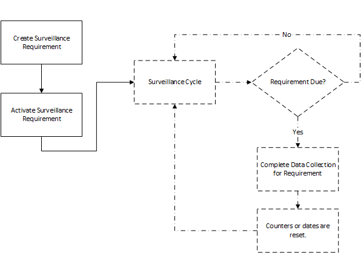

Surveillance requirements enforce data collection for resources, resource groups, operations, and work centers. There are two types of surveillance requirement objects:
| • | Lot Surveillance: Requirement becomes due based on number of lots processed. The count of the number of lots processed is specific to the surveillance requirement. For example, a requirement activated for a resource evaluates lots processed by that resource. A requirement activated for an operation evaluates lots processed by that operation. A count is reset once a requirement is completed. |
| • | Time Surveillance: Requirement becomes due based on recurring calendar dates. The due date is reset when the requirement is completed. |
The system administrator creates surveillance requirements using the Lot Surveillance and Time Surveillance modeling objects. You use the Portal's Surveillance Activation page to activate the requirements for selected resources, resource groups, operations, and work centers. You complete surveillance requirements that have become due by using the Surveillance Management page to enter required data collections.
This diagram illustrates the sequence of events from requirement creation to requirement completion.

Active surveillance requirements can be viewed from the WIP Main Surveillance tab or WIP Main Advanced Surveillance pop-up.